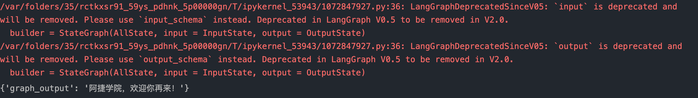
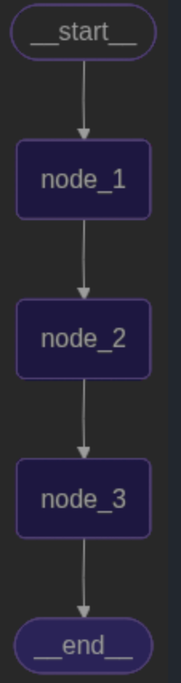
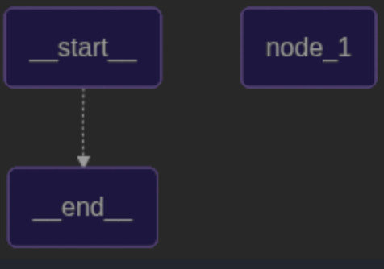
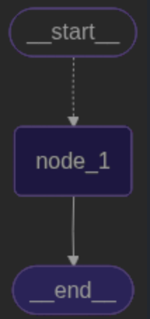

一、理解什么是Graph图
Graph是LangGraph的基本构件模块，它是一个有向无环图(DAG)，用于描述任务之间的依赖关系。 主要包含三个基本的元素：
- State:在整个应用当中共享的一种数据结构
- Node:一个处理数据的节点。LangGraph中通常是一个Python的函数，以State为输入，经过一些操作后，返回更新的State。
- Edge：表示Node之间的依赖关系。LangGraph中通常也是一个Python函数，根据当前State来决定接下来执行那个Node
from typing import TypedDict
from langgraph.constants import START, END
from langgraph.graph import StateGraph
class InputState(TypedDict):
user_input: str
class OutputState(TypedDict):
graph_output: str
class AllState(TypedDict):
foo: str
user_input: str
graph_output: str
class PrivateState(TypedDict):
bar: str
def node_1(state: InputState) -> AllState:
return {"foo": state["user_input"] + "学院"}
def node_2(state: AllState) -> PrivateState:
return {"bar": state["foo"] + "，欢迎你"}
def node_3(state: PrivateState) -> OutputState:
return {"graph_output": state["bar"] + "再来！"}
builder = StateGraph(AllState, input = InputState, output = OutputState)
builder.add_node("node_1", node_1)
builder.add_node("node_2", node_2)
builder.add_node("node_3", node_3)
builder.add_edge(START, "node_1")
builder.add_edge("node_1", "node_2")
builder.add_edge("node_2", "node_3")
builder.add_edge("node_3", END)
graph = builder.compile()
graph.invoke({"user_input": "阿捷"})
还可以通过图来查看
from IPython.display import display,Image
display(Image(graph.get_graph().draw_mermaid_png()))
在构建复杂任务之前，看一下三个特性
1、State状态
State是所有节点共享的状态，它是一个字典，包含了所有节点的状态，有几个需要注意的地方：
- state在形式上，可以是TypedDict字典，也可以是Pydantic中的一个BaseModel，例如
from pydantic import BaseModel
class OverallState(BaseModel):
a: str
这两种实现，本质上没有太多的区别。
- State中定义的属性，通常不需要指定默认值。如果需要默认值，可以通过在START节点后，定一个node来指定默认值。
def node(state: OverallState):
return {"a": "goodbye"}
- state属性，除了可以修改值以外，也可以定义一些操作，来指定如何更新State中的值，我们称之为 reducer 例如
from langgraph.graph.message import add_messages
class State(TypeDict):
messages: Annotated[list[AnyMessage], add_messages]
# 操作为添加信息
list_filed: Annotated[list[int],add]
# 操作为对list里的内容 + 1
extra_filed: int
# 操作为更换值
from langchain_core.messages import AnyMessage,AIMessage
from langgraph.graph import StateGraph
from langgraph.graph.message import add_messages
from typing import TypedDict, Annotated
from operator import add
class State(TypedDict):
messages: Annotated[list[AnyMessage], add_messages]
list_field: Annotated[list[int], add]
extra_field: int
def node1(state: State):
new_message = AIMessage("Hello!")
return {"messages": [new_message], "list_field": [10], "extra_field": 10}
def node2(state: State):
new_message = AIMessage("World!")
return {"messages": [new_message], "list_field": [20], "extra_field": 20}
graph = (StateGraph(State)
.add_node("node1",node1)
.add_node("node2",node2)
.set_entry_point("node1")
# 从node1开始
.add_edge("node1","node2")
.compile())
input_message = {"role": "user", "content": "Hi"}
result = graph.invoke({"messages": [input_message], "list_field": [1,2,3], "extra_field": 0})
print(result){'messages': [HumanMessage(content='Hi', additional_kwargs={}, response_metadata={}, id='764b4684-460f-4fce-848a-a8a2a40daa58'), AIMessage(content='Hello!', additional_kwargs={}, response_metadata={}, id='189fe142-4c25-430f-a115-5d436d04cb09'), AIMessage(content='World!', additional_kwargs={}, response_metadata={}, id='9023e230-3c59-4a09-9584-bee47fce09e8')], 'list_field': [1, 2, 3, 10, 20], 'extra_field': 20}在langgraph中，State主要保存聊天信息，所以LangGraph还提供了一个langgraph.graph.MessagesState，可以用来快速保存信息。
class MessageState(TypeDict):
messages: Annoted[list[AnyMessage], add_messages]
# 然后，对于Message，也可以用序列化的方式来声明
{"messages": [HumanMessage(content="message")]}
{"messages": ["{type": "user", "content": "message"}]}
2、Node状态
Node是图中的一个处理数据的节点。
- 在LangGraph中，Node通常是一个Python的函数，他接受一个State对象作为输入，返回一个State对象作为输出。
- 每个Node通常都会有一个名字，通常是一个字符串，如果没有提供名称，LangGraph会自动生成一个和函数名一样的名称。
- 在具体实现时，通常包含两个具体的参数，一个是State，这个是必选的。第二个是一个可选的配置项config。这里面包含了一些节点运行的配置参数。
- LangGraph对每个Node提供了缓存机制。只要Node的传入参数相同，LangGraph就会优先从缓存中获取Node的执行结果，提升Node的运行速度。
举例说明：
import time
from langgraph.cache.memory import InMemoryCache
from typing import TypedDict
from langgraph.constants import START, END
from langgraph.graph import StateGraph
from langchain_core.runnables import RunnableConfig
from langgraph.types import CachePolicy
class ConfigSchema(TypedDict):
user_id: str
class State(TypedDict):
number: int
user_id: str
def node_1(state: State, config: RunnableConfig):
time.sleep(3)
return {"number": state["number"] + 1, "user_id": config["configurable"]["user_id"]}
builder = StateGraph(State,context_schema=ConfigSchema)
builder.add_node("node_1", node_1,cache_policy=CachePolicy(ttl=5))
builder.add_edge(START,"node_1")
builder.add_edge("node_1",END)
graph = builder.compile(cache=InMemoryCache())
print(graph.invoke({"number":0},config={"user_id":"user_123"},stream_mode="updates"))
print(graph.invoke({"number":0},config={"user_id":"user_456"},stream_mode="updates"))
[{'node_1': {'number': 1, 'user_id': 'user_123'}}]
[{'node_1': {'number': 1, 'user_id': 'user_123'}, '__metadata__': {'cached': True}}]可以看到因为走了缓存，所以即使改变之后依旧输入的是user_123
- 对于Node，LangGraph除了提供缓存机制，还提供了重试机制。
- 可以针对单个节点指定，例如：
from langgraph.types import Retrypolicy
builder.add_node("node1", node_1,retry=RetryPolicy(max_attempts=4))
另外，也可以针对某一次任务调用指定，例如
print(graph.invoke(xxxx, config{"recursion_limit":25}))3、边 Edge
在Graph图中，通过Edge(边)中把Node(节点)连接起来，从而决定State应该如何在Graph中传递，LangGraph中也提供了非常灵活的构建方式。
- 普通Edge和EntryPoint
Edge通常是用来把两个Node连接起来，形成逻辑处理路线。例如graph.add_edge("node_1","node_2")。 LangGraph中提供了两个默认的Node，START和END，用来作为Graph的入口和出口。 同时，也可以自行指定EntryPoint。例如 builder = StateGraph(State) builder.set_entry_point("node1") builder.set_finsh_point("node1")
- 条件Edge和EntryPoint
- 我们也可以添加带有条件判断的Edge和EntryPoint，用来构建更复杂的工作流程
具体实现时，可以指定一个函数，函数的返回值就可以是下一个Node的名称
from langchain_core.runnables import RunnableConfig
from langgraph.constants import START, END
from langgraph.graph import StateGraph
class State(TypedDict):
number: int
def node_1(state: State, config: RunnableConfig):
return {"number": state["number"] + 1}
builder = StateGraph(State)
builder.add_node("node_1", node_1)
def route_func(state:State) -> str:
if state["number"] > 5:
return "node_1"
else:
return END
builder.add_edge("node_1",END)
builder.add_conditional_edges(START,route_func)
graph = builder.compile()
# print(graph.invoke({"number":4}))
print(graph.invoke({"number":10})){'number': 4}
{'number': 11}通过Graph图看一下
from IPython.display import display,Image
display(Image(graph.get_graph().draw_mermaid_png()))
另外，如果不想再路由函数中写入过多具体的节点名称，也可以在函数中返回一个自定义的结果，然后将这个结果解析道某一个具体的Node上。
def routine_func(state:State) -> bool:
if state["number"] > 5:
return True
else:
return False
builder.add_conditional_edges(START,routine_func,{True:"node_a",False: "node_b"})- Send动态路由
在条件边中，如果希望一个Node后面对接多个Node，则可以使用Send动态路由的方式实现。 Send对象可传入两个参数，第一个是下一个Node的实现，第二个是Node的输入
from operator import add
from typing import TypedDict, Annotated
from langgraph.constants import START,END
from langgraph.graph import StateGraph
from langgraph.types import Send
class State(TypedDict):
messages: Annotated[list[str], add]
class PrivateState(TypedDict):
msg: str
def node_1(state: PrivateState) -> State:
res = state["msg"] + "!"
return {"messages": [res]}
builder = StateGraph(State)
builder.add_node("node_1", node_1)
def routing_func(state:State):
result = []
for message in state["messages"]:
result.append(Send("node_1",{"msg":message}))
return result
# 通过路由函数，将每条消息发送到 node_1 节点进行处理
builder.add_conditional_edges(START,routing_func,["node_1"])
builder.add_edge("node_1",END)
graph = builder.compile()
print(graph.invoke({"messages":["Hello","World"]})){'messages': ['Hello', 'World', 'Hello!', 'World!']}通过图片生成
from IPython.display import display,Image
display(Image(graph.get_graph().draw_mermaid_png()))
- Command命令
通常，Graph中一个典型的业务步骤是State进入一个Node处理。在Node中先更新State状态，然后再通过Edges传递给下一个Node。如果希望将两个步骤合并成一个命令，那么还可以使用Command命令
from operator import add
from typing import TypedDict, Annotated
from langgraph.constants import START,END
from langgraph.graph import StateGraph
from langgraph.types import Command
class State(TypedDict):
messages: Annotated[list[str], add]
def node_1(state: State):
new_message = []
for msg in state["messages"]:
new_message.append(msg + "!")
return Command(
goto=END,
update={"messages": new_message}
)
builder = StateGraph(State)
builder.add_node("node_1", node_1)
builder.add_edge(START,"node_1")
graph = builder.compile()
print(graph.invoke({"messages":["Hello","World"]})){'messages': ['Hello', 'World', 'Hello!', 'World!']}4、子图
在LangGraph中，一个Graph除了可以单独使用，还可以作为一个Node，嵌入到另一个Graph中。这种用法就称为子图。通过子图，我们可以更好的重用Graph，构建更复杂的工作流。尤其是在构建多Agent非常有用。在大型项中，通常都是有一个专门的团队开发Agent，再通过其他团队来完整Agent整合。 使用子图时，基本和使用Node没有太多的区别。 唯一需要注意的是，当初发了SubGraph代表的Node后，实际上是相当于重新调用了一次subgraph.invoke(state)方法。
from operator import add
from typing import TypedDict, Annotated
from langgraph.constants import END
from langgraph.graph import StateGraph, START,MessagesState
class State(TypedDict):
messages: Annotated[list[str], add]
def sub_node_1 (state:State) -> MessagesState:
return {"messages":["response from subgraph"]}
subgraph = (StateGraph(State)
.add_node("sub_node_1",sub_node_1)
.set_entry_point("sub_node_1")
.compile())
graph = (StateGraph(State)
.add_node("subgraph_node", subgraph)
.set_entry_point("subgraph_node")
.compile())
print(graph.invoke({"messages":["Hello,Subgraph"]})){'messages': ['Hello,Subgraph', 'Hello,Subgraph', 'response from subgraph']}
结果代码Hello,Subgraph 出现了两次，因为subgraph_node中默认调用了一次subgraph.invoke(state)方法。主图也调用了一次5、图的流式输出
和调用大模型类似，Graph除了可以通过invoke方法直接调用外，也可以通过stream()方法进行流式调用。不过大模型的流式调用时依次返回大模型相应的Token。而Graph的流式输出则是依次返回数据处理步骤。 graph提供了stream()方法进行同步的流式调用，也提供了astream()方法进行异步的流式调用。
for chunk in graph.stream({"messages": ["hello subgraph"]},stream_mode="updates"):
print(chunk)
LangGraph支持几种不同的stream mode:
- values:在图的每一步之后流式传输状态的完整值。
- updates:在图的每一步之后，将更新内容流式传输到状态。如果在同一步骤中进行了多次更新(例如，运行了多个节点)，这些更新将分别进行流式传输。
- custom:从图节点内部流式传输自定义数据。通常用于调试。
- messages:从任何调用大模型的图节点中，流式传输二元组（LLM的Token，元数据）
- debug:在图的执行过程中尽可能多的传输信息，用的比较少。
values、updates、debug输出模式，使用之前案例验证，就能很快感受到其中的区别。 messages输出模式，由于在之前案例中并没有调用大模型，所以不会有输出结果。 而custom输出模式，可以自定义输出内容。在Node节点内或者Tools工具内，通过get_stream_writer()方法获取一个StreamWriter对象，然后使用write()方法将自定义数据写入流中
from typing import TypedDict
from langgraph.config import get_stream_writer
from langgraph.graph import StateGraph,START
class State(TypedDict):
query: str
answer: str
def node(state: State):
writer = get_stream_writer()
writer({"自定义key": "自定义value"})
return {"answer": "这是答案"}
graph=(StateGraph(State)
.add_node("node",node)
.set_entry_point("node")
.compile())
inputs = {"query":"example"}
for chunk in graph.invoke(inputs,stream_mode="custom"):
print(chunk){'自定义key': '自定义value'}在langchain中可以通过disable_streaming禁止流式输出。
llm = ChatOpenAI(model="", disable_streaming=True)